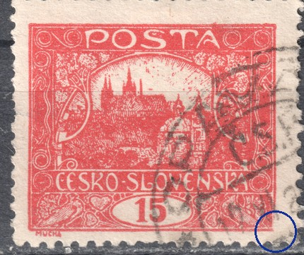
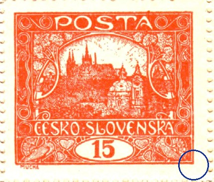
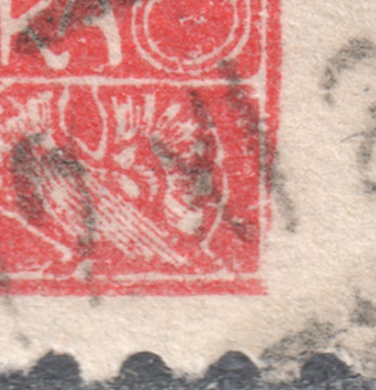
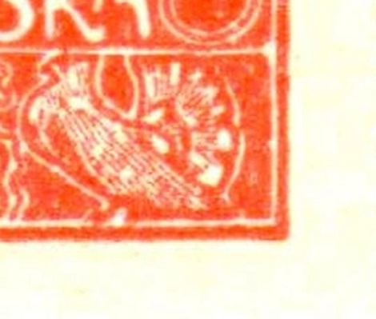
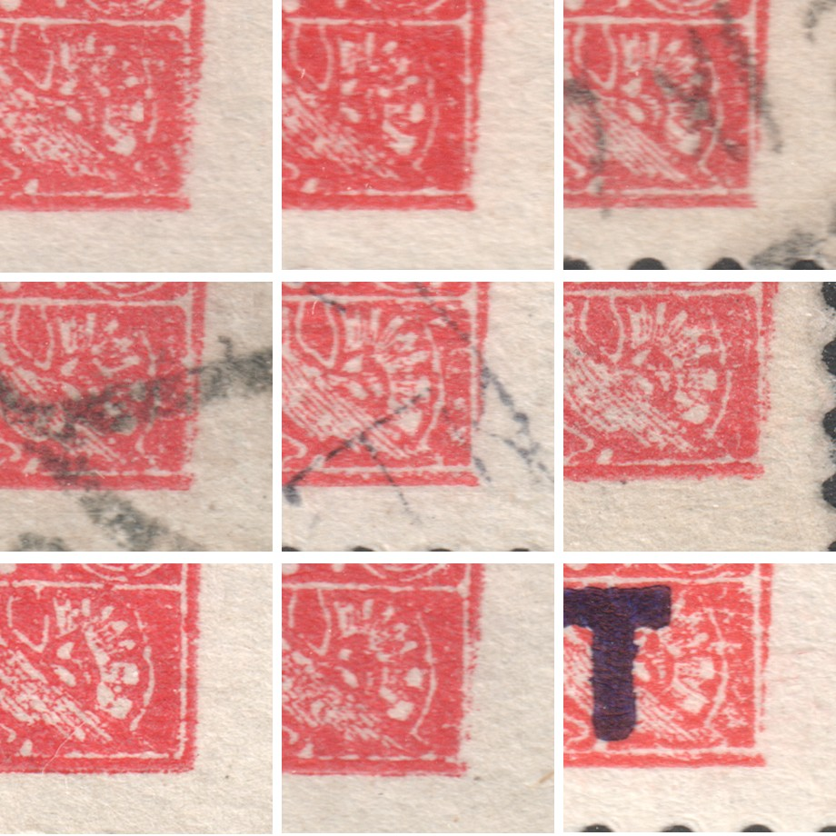
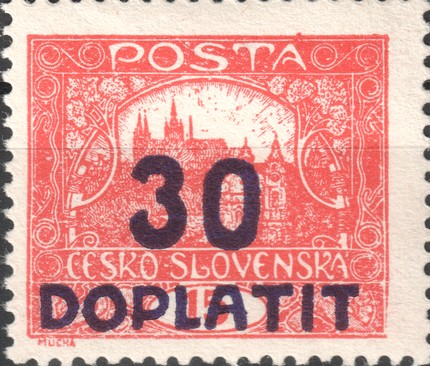

15h – gebrochener Rahmen auf 20/V
Beim Durchsehen des Materials der V. Druckplatte fiel mir eine Kleinigkeit auf, die sich wiederholt: bei einem Teil der Marken vom Markenfeld 20 ist die rechte untere Ecke des Zeichnungsrahmens gebrochen. Da dasselbe Objekt auf demselben Feld bei neun verschiedenen Stücken wiederkehrt, handelt es sich nicht um die Beschädigung einer einzelnen Marke, sondern um einen konstanten Plattenfehler.
Wie der Fehler aussieht
Im unbeschädigten Zustand bildet die rechte untere Rahmenecke einen sauberen rechten Winkel — sowohl die äußere Rahmenlinie als auch der schmale weiße Zwischenraum, der sie vom Ornamentband trennt, laufen ohne Unterbrechung um die Ecke. Bei den fehlerhaften Marken wird die Ecke zu einem zusammenhängenden Fleck: der weiße Zwischenraum ist in der Ecke zugelaufen, die Linien fließen ineinander, und der Rahmen verliert an dieser Stelle seine scharfe Form.


Links 20/V mit gebrochenem Rahmen, rechts dasselbe Feld im unbeschädigten Zustand (aus der Positionsgalerie). Der Kreis markiert die betrachtete Stelle.
Dieselbe Stelle in stärkerer Vergrößerung:


Links die gebrochene Ecke, rechts die unbeschädigte.
Die Positionsgalerie zeigt 20/V im Zustand ohne dieses Objekt — es entstand also erst im Lauf des Drucks. Welcher Art es ist, lasse ich vorerst offen. Die Rahmenlinien behalten ihre Form, und es fehlt nichts von ihnen; was sich ändert, ist die Zeichnung innerhalb der Ecke. Zwischen örtlich geschwächtem Druck (einer Lichtstelle) und einer zugesetzten Stelle der Platte, die umgekehrt Farbe hinzufügt, wird sich erst im Vergleich mit postalisch gelaufenen Stücken von 20/V ohne das Objekt entscheiden lassen. Um ein mechanisches Ausbrechen des Rahmens, wie wir es von 60/VI kennen, handelt es sich nach dem bisherigen Material nicht.
Belegte Stücke
Neun Stücke, auf denen der Fehler belegt ist — stets die rechte untere Ecke, stets in derselben Gestalt:

Der Fehler und die Zähnungen
| Zähnung | Ohne Fehler | Mit Fehler |
|---|---|---|
| A (13¾:13½) | belegt | — |
| B (11¾) | belegt | belegt |
| C (13¾) | belegt | belegt |
Die Übersicht stützt sich auf die Zähnungen A, B und C — die drei Zähnungen, die neben der geschnittenen Form auf der V. Platte belegt sind.
Auf den ersten Blick bietet sich die Lesart an, die Platte sei erst beschädigt worden, nachdem die Bogen mit Zähnung A abgefertigt waren. Die Zahlen aus den Statistiken tragen einen solchen Schluss jedoch nicht:
- Zähnung A ist auf den Platten V–VI selten: 501 Stück, also rund 5 % des Materials dieser Platten, gegenüber etwa 47 % bei B wie bei C. Unter neun fehlerhaften Stücken läge die erwartete Zahl der Stücke mit Zähnung A bei etwa 0,5 — ein Nullbefund beweist also für sich genommen nichts.
- Die frühesten belegten Verwendungen sprechen eher dagegen: A auf den Platten 5–6 ist ab dem 25. 3. 1920 belegt, B dagegen ab dem 8. 2. 1920 und C ab dem 22. 2. 1920. Auf diesen Platten tritt Zähnung A zuletzt auf, nicht zuerst.
- Die Zähnung war überdies der letzte Arbeitsgang und musste dem Druck eines Bogens nicht unmittelbar folgen. Die Zähnungsgruppe sagt daher über den Zeitpunkt des Drucks nur ungefähr etwas aus und taugt als Datierungshilfe höchstens zur groben Orientierung.
Es bleibt die nüchterne Feststellung: der Fehler ist in den Zähnungen B und C belegt, also in den beiden Gruppen, die auf der V. Platte die überwiegende Mehrheit des Materials ausmachen. Ob er auch in Zähnung A und in der geschnittenen Form vorkommt, bleibt offen — und genau dorthin lohnt es sich, weitere Funde zu richten.
Der Portoaufdruck
Eines der belegten Stücke trägt den Aufdruck 30 DOPLATIT. Der beschädigte Zustand der Platte gelangte also auch in Bogen, die später für die Portoaufdrucke verwendet wurden. Für den Sammler heißt das: 20/V mit gebrochenem Rahmen lohnt die Suche nicht nur unter den Freimarken.

Wie weiter
Neun Stücke sind für feste Schlüsse zu wenig. Über Meldungen weiterer Stücke von 20/V freue ich mich — besonders in Zähnung A und in der geschnittenen Form — ebenso über Stücke ohne Fehler mit lesbar datiertem Stempel: erst Stempeldaten können die Entwicklung des Fehlers zeitlich genauer einordnen, als es die Zähnungsgruppen vermögen. Die Kontaktangaben finden Sie auf der Seite Gesucht.